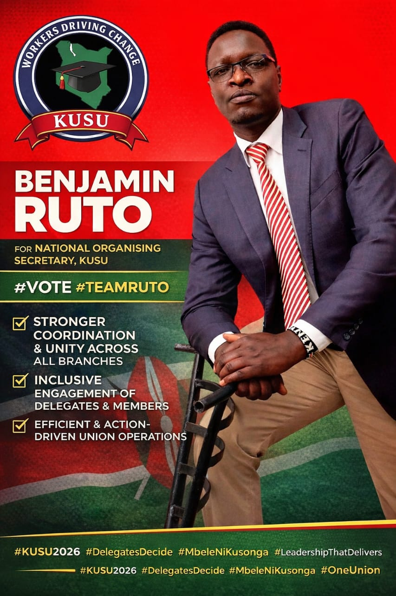

Candidate – National Organising Secretary, KUSU-2026
Unity
Across branches
Experience
Leadership tested
Efficiency
Action-driven delivery
Leadership that understands the ground and delivers results.
Distinguished Delegates and Esteemed Executive Members, the decision is yours. Benjamin Ruto offers tested leadership, stronger coordination, structured union operations, and a united voice for members across all branches.

#DelegatesDecide
#MbeleNiKusonga
About the candidate
Leadership is not declared — it is demonstrated.
As Chairman, KUSU Egerton University Branch, Benjamin Ruto has stood firm in moments that tested the Union. He has delivered results, strengthened structures, and upheld the voice of members with clarity and courage.
He now seeks your mandate to serve as National Organising Secretary, bringing coordination, unity, and efficiency across all branches of KUSU.
“Forward is not optional — it is necessary.”
Mbele ni kusonga.
My commitment
A practical agenda for a stronger KUSU.
01
Stronger coordination
Build a reliable bridge between National leadership and Branch leadership for smooth communication, shared action, and better outcomes.
02
Structured operations
Support efficient, well-organized, and accountable Union systems that respond faster to members and delegates.
03
Inclusive engagement
Ensure every delegate and member feels heard, respected, and involved in the life and direction of the Union.
04
Action-driven unity
Promote one united, responsive, and practical KUSU that does not only speak well, but works well.
Why Benjamin Ruto
Choose experience that delivers.
- Understands the realities on the ground
- Has demonstrated courage in leadership
- Values unity and structured coordination
- Committed to members-first organizing
- Ready to strengthen KUSU nationally

Message to delegates
Delegates, the decision is yours.
Campaign call
Back to top
One Union. One Vision. Members First.
#DelegatesDecide #KUSU2026 #MbeleNiKusonga #LeadershipThatDelivers #OneUnionOneVision #MembersFirst #ForwardLeadership